I greet you this day,
These are the solutions to the WASSCE past questions on the topics in Trigonometry.
When applicable, the TI-84 Plus CE calculator (also applicable to TI-84 Plus calculator) solutions are provided
for some questions.
The link to the video solutions will be provided for you. Please
subscribe to the YouTube channel to be notified of upcoming livestreams. You are welcome to ask questions during
the video livestreams.
If you find these resources valuable and if any these resources were helpful in your passing the
Mathematics exam of WASSCE, please consider making a donation:
Google charges me for the hosting of this website and my other
educational websites. It does not host any of the websites for free.
Besides, I spend a lot of time to type the questions and the solutions well.
As you probably know, I provide clear explanations on the solutions.
Your donation is appreciated.
Comments, ideas, areas of improvement, questions, and constructive
criticisms are welcome.
Feel free to cont, me. Please be positive in your message.
I wish you the best.
Thank you.
Please NOTE: For applicable questions (questions that require the angle in degrees), if you intend to
use the TI-84 Family:
Please make sure you set the MODE to DEGREE.
It is RADIAN by default. So, it needs to be set to DEGREE.
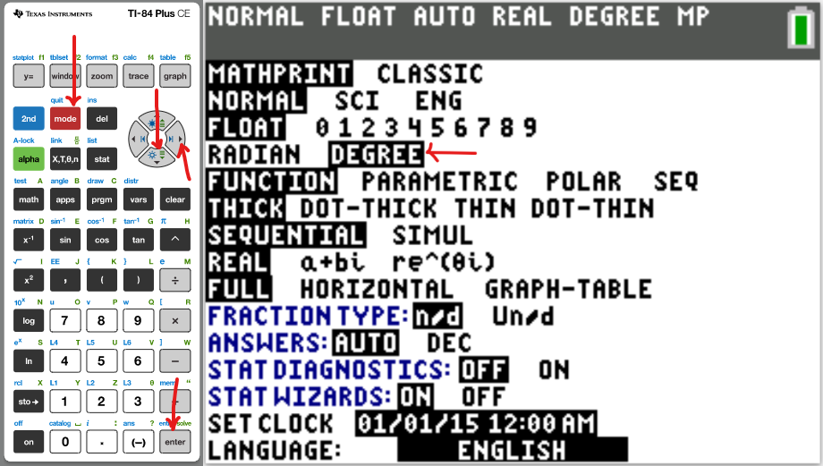
Coterminal Angles
Coterminal angles are angles with the same initial side and the same terminal side.
The concept of coterminal angles helps us to find the equivalent positive angle of a negative angle.
Because an angle in standard position is measured counterclockwise, adding 360° to it accounts for a full
revolution, keeping the direction intact.
Hence for any angle say θ, the coterminal angles are θ + 360k where k is any integer.
Trigonometric Functions
Right Triangle Trigonometry for any angle, say $\theta$
Pneumonic for it is: SOHCAHTOA and cosecHOsecHAcotanAO
\begin{array}{c | c}
II & I \\
\hline
III & IV
\end{array} =
\begin{array}{c | c}
S & A \\
\hline
T & C
\end{array} =
\begin{array}{c | c}
Sine\:\: is\:\: positive & All\:\: are\:\: positive \\
\hline
Tangent\:\: is\:\: positive & Cosine\:\: is\:\: positive
\end{array}
The pneumonic to remember it:
First Quadrant to Fourth Quadrant (clockwise direction): A-C-T-S (ACTS of the Apostles)
First Quadrant to Fourth Quadrant (counter-clockwise direction): A-S-T-C: ADD - SUGAR - TO - COFFEE
Fourth Quadrant to Third Quadrant (counter-clockwise direction): C-A-S-T (Simon Peter, CAST your net into the
sea.)
Second Quadrant to Third Quadrant (clockwise direction): S-A-C-T
Cofunction Identities (Identities of Complements) First Quadrant Identities First Quadrant:All (sine, cosine, tangent) are positive
This implies that cosecant, secant, and cotangent are also positive.
Given: two angles say: $\alpha$ and $\beta$;
If $\alpha$ and $\beta$ are complementary, then the: Sine function and the Cosine functions are cofunctions
$
\sin \alpha = \cos \beta \\[3ex]
\cos \alpha = \sin \beta \\[3ex]
$
Tangent function and the Cotangent functions are cofunctions
$
\tan \alpha = \cot \beta \\[3ex]
\cot \alpha = \tan \beta \\[3ex]
$
Secant function and the Cosecant functions are cofunctions
$
\sec \alpha = \csc \beta \\[3ex]
\csc \alpha = \sec \beta \\[3ex]
$
Given: one angle say: $\theta$; First Quadrant Identities or Cofunction Identities or Identities of Complements
$90 \lt \theta \lt 180$ ... Angle in Degrees
Reference Angle = $180 - \theta$ ... Angle in Degrees
$\dfrac{\pi}{2} \lt \theta \lt \pi$ ... Angle in Radians
Reference Angle = $\pi - \theta$ ... Angle in Radians Second Quadrant:sine is positive
This implies that cosecant is also positive
Symmetric across the y-axis
Given: one angle say: $\theta$;
Supplement of $\theta$ = $180 - \theta$ where $\theta$ is in degrees:
Supplement of $\theta$ = $\pi - \theta$ where $\theta$ is in radians:
$
(1.)\;\; \sin \theta = \dfrac{1}{\csc \theta} \\[3ex]
(2.)\;\; \cos \theta = \dfrac{1}{\sec \theta} \\[3ex]
(3.)\;\; \tan \theta = \dfrac{1}{\cot \theta} \\[5ex]
$
Quotient Identities
$
(1.)\;\; \tan \theta = \dfrac{\sin \theta}{\cos \theta} \\[3ex]
(2.)\;\; \cot \theta = \dfrac{\cos \theta}{\sin \theta} \\[3ex]
$
As you can see, $\cot \theta$ has two formulas
$
\cot \theta = \dfrac{1}{\tan \theta} \\[5ex]
\cot \theta = \dfrac{\cos \theta}{\sin \theta} \\[5ex]
$
Sometimes, we shall use the first one. Sometimes, we shall use the second one.
We have to use the formula that will not give us an undefined value (where the denominator is zero)
Even Identities
Recall: a function, say $f(x)$ is even if $f(-x) = f(x)$
In Trigonometry, the cosine function and the secant function are even functions.
$
(1.)\;\; \cos (-\theta) = \cos \theta \\[3ex]
(2.)\;\; \sec (-\theta) = \sec \theta \\[5ex]
$
Odd Identities
Recall: a function, say $f(x)$ is odd if $f(-x) = -f(x)$
In Trigonometry, the sine function, the cosecant function,
the tangent function, and the cotangent function are odd functions.
Sine Law:
Applies to all triangles.
It states that the ratio of the side length of any triangle to the sine of the angle measure opposite that side
is the same for the three sides of the triangle.
The ratio of the angle measure of any triangle to the side length opposite that angle is the same for the three
angles of the triangle.
$
\dfrac{\sin A}{a} = \dfrac{\sin B}{b} = \dfrac{\sin C}{c} \\[5ex]
$
Cosine Law:
Applies to all triangles.
It states that the square of a side of a triangle is the difference between the sum of the squares of the other
two sides and twice the product of the two sides and the included angle.
$
a^2 = b^2 + c^2 - 2bc \cos A \\[3ex]
\cos A = \dfrac{b^2 + c^2 - a^2}{2bc} \\[5ex]
\rightarrow A = \cos^{-1} \left(\dfrac{b^2 + c^2 - a^2}{2bc}\right) \\[5ex]
b^2 = a^2 + c^2 - 2ac \cos B \\[3ex]
\cos B = \dfrac{a^2 + c^2 - b^2}{2ac} \\[5ex]
\rightarrow B = \cos^{-1} \left(\dfrac{a^2 + c^2 - b^2}{2ac}\right) \\[5ex]
c^2 = a^2 + b^2 - 2ab \cos C \\[3ex]
\cos C = \dfrac{a^2 + b^2 - c^2}{2ab} \\[5ex]
\rightarrow C = \cos^{-1} \left(\dfrac{a^2 + b^2 - c^2}{2ab}\right) \\[5ex]
$
Theorems
(1.) Sum of Angles of a Triangle Theorem:
The sum of the interior angles of a triangle is 180°
(2.) In a 30° – 60° – 90° right triangle; the length of the hypotenuse
is twice the length of the short side.
(3.) In a 30° – 60° – 90° right triangle; the length of the middle side
is the square root of 3 times the length of short side.
(4.) In a 45° – 45° – 90° right triangle theorem (Right Isosceles Triangle
Theorem); the length of the hypotenuse is the square root of 2 times the length of either side.
(5.) Pythagorean Theorem: Applies only to right triangles.
In a right triangle, the square of the length of the hypotenuse is the
sum of the squares of the short side and the middle side.
$hyp^2 = leg^2 + leg^2$
(6.) Converse of the Pythagorean Theorem (Right Triangle Theorem):
If the square of the long side(hypotenuse) is the
sum of the squares of the other two sides, then the triangle is a right triangle.
(7.) Acute Triangle Theorem: If the square of the long side is less than the sum of the squares of the
other two sides, then the triangle is an acute triangle.
(8.) Obtuse Triangle Theorem: If the square of the long side is greater than the sum of the squares of
the other two sides, then the triangle is an obtuse triangle.
(9.) Triangle Inequality Theorem: This is the theorem that determines if you can form a triangle using
any three lengths.
The sum of the lengths of any two sides of a triangle is greater than the length of the third side.
(10.) Side Length – Angle Measure Theorem: If any two side lengths of a triangle are unequal; the
angles of the triangle are also unequal, and the measure of an angle is opposite the length of the side facing
that angle as regards size.
The measure of the smallest angle is opposite the shortest side length.
The measure of the greatest angle is opposite the longest side length.
The measure of the middle angle is opposite the middle side length.
In other words; regarding size, the measure of an angle is opposite the length of the side facing the
angle; or the side length facing an angle is opposite the angle measure as regards size.
Small side faces small angle, middle side faces middle angle, big side faces big angle
(11.) Exterior Angle of a Triangle Theorem: The exterior angle of a triangle is the sum of the two
interior opposite angles.
(12.) Isosceles Base Angles Theorem: The base angles of an isosceles triangle are equal.
(13.) Converse of the Isosceles Base Angles Theorem: If the base angles of a triangle are equal, then the
triangle is an isosceles triangle.
(14.) Perpendicular Bisector of the Base of an Isosceles Triangle Theorem: It states that if a line
bisects the vertex angle of an isosceles triangle, then the line is also the perpendicular
bisector of the base (the line also bisects the base of that isosceles triangle at right angles).
(15.) Perpendicular Height to Base of Isosceles Triangle Theorem It states that the perpendicular height
drawn from the apex of an isosceles triangle to the base:
(a.) bisects the base
(b.) bisects the apex angle.
(16.) Side-Splitter Theorem Applies to all triangles with inserted parallel lines as applicable.
It states that if a line segment is parallel to one side of a triangle and intersects the other two sides of
the triangle, then it divides those two sides proportionally.
(17.) Midpoint Theorem Applies to all triangles in which a line segment
joins the midpoints of any two sides of the triangle.
It states that if a line segment joins any two sides of a triangle, then the line segment:
(a.) is parallel to the third side.
(b.) bisects the third side.
(18.) Converse of the Midpoint Theorem A line segment drawn through the midpoint of one side of a
triangle and parallel to another side, bisects the third side.
(19.) Scale Factor, Perimeter Ratio, and Area Ratio of Similar Figures Theorem Applies to all similar
figures including similar triangles.
It states that for two similar figures, the ratio of the perimeters is the same as the scale factor; and the
ratio of the areas is the ratio of the square of the scale factor.
Circle Formulas
Except stated otherwise, use:
$
d = diameter \\[3ex]
r = radius \\[3ex]
L = arc\:\:length \\[3ex]
A = area\;\;of\;\;sector \\[3ex]
P = perimeter\;\;of\;\;sector \\[3ex]
\theta = central\:\:angle \\[3ex]
\pi = \dfrac{22}{7} \\[5ex]
RAD = radians \\[3ex]
^\circ = DEG = degrees \\[7ex]
\underline{\theta\;\;in\;\;DEG} \\[3ex]
L = \dfrac{2\pi r\theta}{360} \\[5ex]
\theta = \dfrac{180L}{\pi r} \\[5ex]
r = \dfrac{180L}{\pi \theta} \\[5ex]
A = \dfrac{\pi r^2\theta}{360} \\[5ex]
\theta = \dfrac{360A}{\pi r^2} \\[5ex]
r = \dfrac{360A}{\pi\theta} \\[5ex]
P = \dfrac{r(\pi\theta + 360)}{180} \\[7ex]
\underline{\theta\;\;in\;\;RAD} \\[3ex]
L = r\theta \\[5ex]
\theta = \dfrac{L}{r} \\[5ex]
r = \dfrac{L}{\theta} \\[5ex]
A = \dfrac{r^2\theta}{2} \\[5ex]
\theta = \dfrac{2A}{r^2} \\[5ex]
r = \sqrt{\dfrac{2A}{\theta}} \\[5ex]
P = r(\theta + 2) \\[7ex]
Circumference\:\:of\:\:a\:\:circle = 2\pi r = \pi d \\[3ex]
L = \dfrac{2A}{r} \\[5ex]
r = \dfrac{2A}{L} \\[5ex]
A = \dfrac{Lr}{2}
$
(1.)
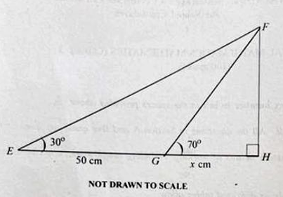
In the diagram, EFH is a triangle, $|\overline{EG}|$ = 50cm and $|\overline{GH}|$ = x cm.
Find, correct to one decimal place,:
(a.) the value of x
(b.) $|\overline{FH}|$
(2.) (a.) A cottage is on a bearing of 200° and 110° from Dogbe's and Mamu's farms respectively.
If Dogbe walked 5 km and Mamu 3 km from the cottage tk their farms, find, correct to:
(i.) two significant figures, the distance between the two farms.
(ii.) the nearest degree, the bearing of Mamu's farm from Dogbe's.
(b.) A ladder 10 m long leaned against a vertical wall x m high.
The distance between the wall and the foot of the ladder is 2 m longer than the height of the wall.
Calculate the value of x.
(a.)
Let:
Dogbe's farm = D
Mamu's farm = M
Cottage = C
Let us represent the information diagrammatically
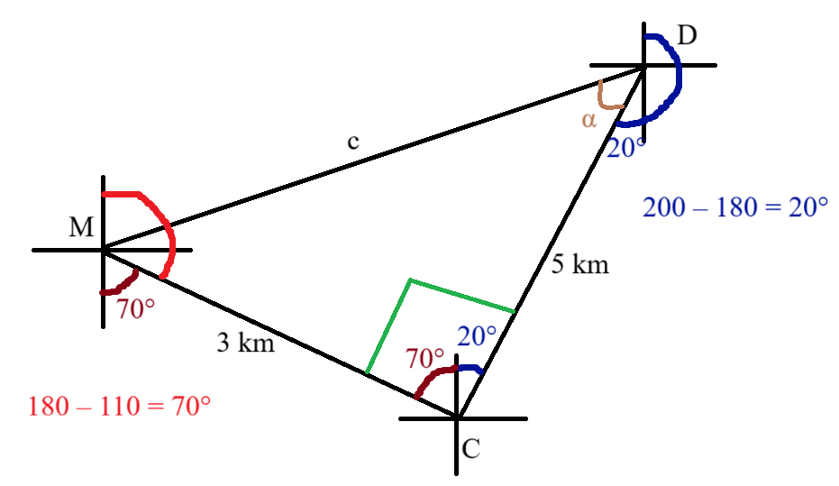
$
\alpha = \angle MDC \\[3ex]
\underline{\text{Right Triangle MDC}} \\[3ex]
(i.) \\[3ex]
c^2 = 5^2 + 3^2 ...\text{Pythagorean Theorem} \\[3ex]
c = \sqrt{25 + 9} \\[3ex]
c = 5.830951895 \\[3ex]
c \approx 5.8\;km...\text{to two significant figures} \\[5ex]
\tan \alpha = \dfrac{3}{5}...\text{SOHCAHTOA} \\[5ex]
\alpha = \tan^{-1}(0.6) \\[3ex]
\alpha = 30.96375653 \\[3ex]
(ii.) \\[3ex]
\text{Bearing of M from D} \\[3ex]
= 200 + \alpha \\[3ex]
= 200 + 30.96375653 \\[3ex]
= 230.96375653 \\[3ex]
\approx 231^\circ ...\text{to the nearest degree} \\[3ex]
$
(b.)
Let us represent the information diagrammatically.
(3.) A tree is 8 km due south of a building.
Musa is standing 8 km due west of the tree.
(i.) Illustrate the information on a diagram.
(ii.) How far is Musa from the building?
(iii.) Find the bearing of Musa from the building.
In the diagram, PQR is an equilateral triangle of side 18 cm. M is the midpoint of $\overline{QR}$
An arc of a circle with centre P touches $\overline{QR}$ at M and meets $\overline{PQ}$ at
A and $\overline{PR}$ at B
Calculate, correct to two decimal places, the area of the shaded region.
$\left[\text{Take } \pi = \dfrac{22}{7}\right]$
Construction: Draw a perpendicular line from P to M
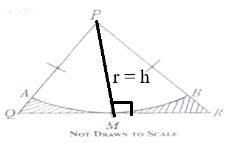
|PM| is the radius, r of the circle...centre P to circumference, M
|PM| is also the perpendicular height, h of the triangle
θ = Angle subtended at center of circle = 60° ...angle in the equilateral triangle PQR
Area of the shaded region = Area of Triangle PQR − Area of Sector PAB
(5.) A town J is 20km from a lorry station, K on a bearing 065°
Another town, T is 8km from K on a bearing 155°
Calculate:
(i.) to the nearest kilometer, the distance of T from J
(ii.) to the nearest degree, the bearing of T from J
(7.) Doris walked 2t km from a village, K to visit a friend in another village, L on a bearing of
065°.
After spending some time with her friend, she continued to a nearby town, M, 3t km away on a bearing of
155°.
If the distance between K and M is $6\sqrt{13}$ km:
(a.) illustrate the information in a diagram;
(b.) calculate, correct to the nearest whole number, the:
(i.) value of t;
(ii.) bearing of M from K.
Let β be the angle opposite side 3t
(a.) The diagram is drawn as shown:
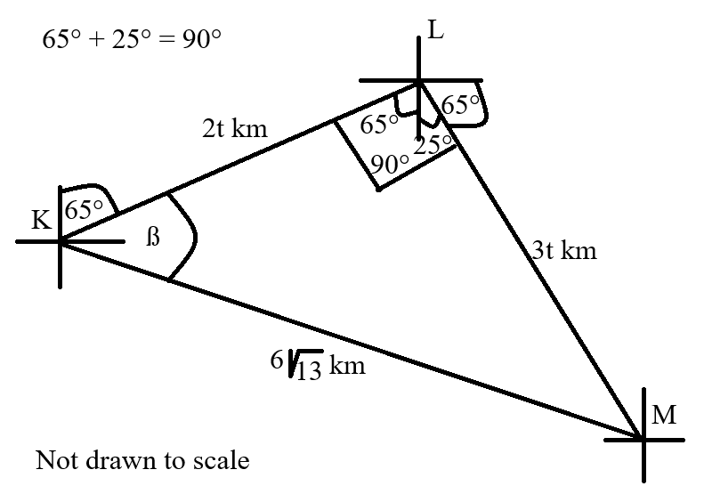
$
(b.)(i.) \\[3ex]
\triangle KLM \text{ is a right triangle} \\[3ex]
\underline{\text{Pythagorean Theorem}} \\[3ex]
hyp^2 = leg^2 + leg^2 \\[3ex]
(6\sqrt{3})^2 = (2t)^2 + (3t)^2 \\[3ex]
36(13) = 4t^2 + 9t^2 \\[3ex]
13t^2 = 36(13) \\[3ex]
t^2 = \dfrac{36(13)}{13} \\[5ex]
t^2 = 36 \\[3ex]
t = \sqrt{36}...\text{side is a positive number} \\[3ex]
\text{discard the negative value} \\[3ex]
t = 6\;km \\[5ex]
(ii.) \\[3ex]
\underline{\text{SOHCAHTOA}} \\[3ex]
\cos\beta = \dfrac{adj}{hyp} \\[5ex]
= \dfrac{2t}{6\sqrt{13}} \\[5ex]
= \dfrac{2(6)}{6\sqrt{13}} \\[5ex]
= \dfrac{12}{6\sqrt{13}} \\[5ex]
= \dfrac{2}{\sqrt{13}} \\[5ex]
= 0.5547001962 \\[5ex]
\beta = \cos^{-1}(0.5547001962) \\[3ex]
= 56.30993247 \\[5ex]
\text{Bearing of M from K} = 65 + \beta \\[3ex]
= 65 + 56.30993247 \\[3ex]
= 121.3099325 \\[3ex]
\approx 121^\circ ...\text{to the nearest whole number}
$
(8.) Given that $\cos(2y - 16) = \dfrac{1}{2}$, 0° ≤ y ≤ 90°, find the value of y.
(9.) In a town, Chief X resides 60 meters away on a bearing of 057° from the palace P,
while Chief Y resides on a bearing of 150° from the same palace P.
The residence of X and Y are 180 meters apart.
(a.) Illustrate the information in a diagram.
(b.) Find, correct to three significant figures, the:
(i.) bearing of X from Y
(ii.) distance between P and Y
$
From\;\;North\;\;of\;\;\;P\;\;to\;\;X: 57^\circ \\[3ex]
Remaining:\; 90 - 57 = 33^\circ \\[3ex]
From\;\;North\;\;of\;\;\;P\;\;to\;\;Y: 150^\circ \\[3ex]
150 - 90 = 60 \\[3ex]
\implies \\[3ex]
\angle P = 33 + 60 = 93^\circ \\[3ex]
$
(a.) θ = angle
The diagram of the information is:
$
\tan x = \dfrac{15}{8} \\[5ex]
x = \tan^{-1}\left(\dfrac{15}{8}\right) \\[5ex]
5\sin x - 6\cos x \\[3ex]
$
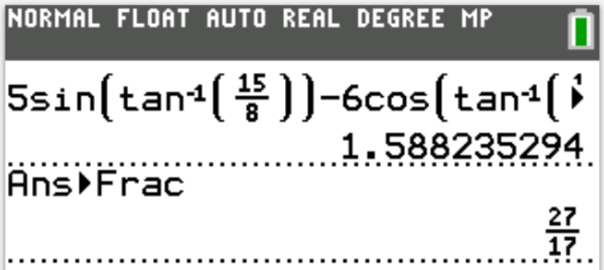
(11.) The bearing of points X and Y from Z are 040° and 300°, respectively.
If |XY| = 19.5km and |YZ| = 11.5km
(a.) Illustrate the information in a diagram.
(b.) Calculate, correct to the nearest whole number,
(i.) ∠ZXY
(ii.) |XZ|
(13.) The points X and Y, 19 m apart are on the same side of a tree.
The angles of elevation of the top, T, of the tree from X and Y on the horizontal ground
with the foot of the tree are 43° and 38° respectively.
(i.) Illustrate the information in a diagram.
(ii.) Find, correct to one decimal place, the height of the tree.
(a.)
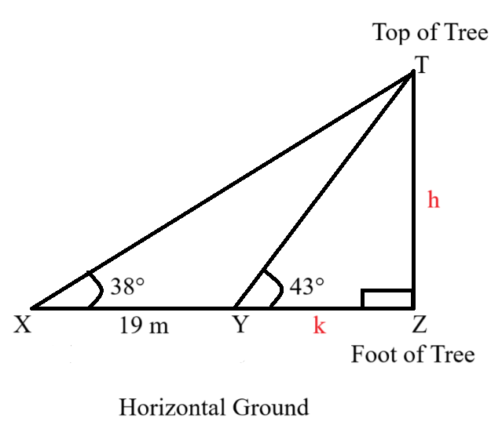
$
\text{height of the tree} = |TZ| = h \\[3ex]
|YZ| = k \\[5ex]
\underline{\text{Right Triangle TYZ}} \\[3ex]
\tan 43^\circ = \dfrac{h}{k}...\text{SOHCAHTOA} \\[5ex]
k = \dfrac{h}{\tan 43} ...eqn.(1) \\[5ex]
\underline{\text{Right Triangle TXZ}} \\[3ex]
\tan 38^\circ = \dfrac{h}{19 + k}...\text{SOHCAHTOA} \\[5ex]
k + 19 = \dfrac{h}{\tan 38} \\[5ex]
k = \dfrac{h}{\tan 38} - 19 ...eqn.(2) \\[5ex]
k = k \implies eqn.(2) = eqn.(1) \\[3ex]
\dfrac{h}{\tan 38} - 19 = \dfrac{h}{\tan 43} \\[5ex]
\dfrac{h}{\tan 38} - \dfrac{h}{\tan 43} = 19 \\[5ex]
\dfrac{h\tan 43 - h\tan 38}{(\tan 38)(\tan 43)} = 19 \\[5ex]
h(\tan 43 - \tan 38) = 19(\tan 38)(\tan 43) \\[3ex]
h = \dfrac{19(\tan 38)(\tan 43)}{\tan 43 - \tan 38} \\[5ex]
h = 91.53409704 \\[3ex]
h \approx 91.5\;m...\text{to one decimal place}
$
(14.)
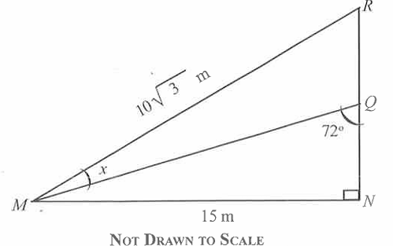
In the diagram, MNR is right triangle.
$|\overline{MN}| = 15\;m$, $|\overline{MR}| = 10\sqrt{3}\;m$ and $\angle MQN = 72^\circ$.
Calculate, correct to the nearest whole number:
(a.) the value of the angle marked x;
(b.) $|\overline{QR}|$;
(c.) area of $\triangle MQR$
(16.) The points X, Y, and Z are located such that Y is 15 km south of X,Z
is 20 km from X on a bearing of 270°.
Calculate, correct to:
(a.) two significant figures, $|YZ|$
(b.) the nearest degree, the bearing of Y from Z
(17.) From a point X, a boat sails 6km on a bearing of 037° to a point Y
It then sails 7km from Y on a bearing of 068° to a point Z
Calculate the:
(a.) distance XZ, correct to two decimal places;
(b.) bearing of Z from X, correct to the nearest degree.
(19.) A vertical pole 6 m high, cast a shadow 9 m long at the same time that a tree cast a shadow 30 m long.
Find the height of the tree.
Let the height of the tree = h
Proportional Reasoning Method
Height of Object (m)
Length of Shadow (m)
6
$h$
9
30
$
\dfrac{h}{6} = \dfrac{30}{9} \\[5ex]
h = \dfrac{6 * 30}{9} \\[5ex]
h = 20\;m
$
(20.) Two canoes M and N started from a shore A at the same time. M sails at 35 km/hr on a bearing of 230° while N sails at 30km/hr on a bearing of 320°.
If the two canoes sailed for 2.5 hours, find, correct to one decimal place, the:
(a.) distance between M and N
(b.) bearing of M from N
$
s...t...d \\[3ex]
speed * time = distance \\[3ex]
\underline{\text{Canoe M}} \\[3ex]
speed = 35\;km/hr \\[3ex]
time = 2.5\;hr \\[3ex]
distance = 35(2.5) = 87.5\;km \\[5ex]
\underline{\text{Canoe N}} \\[3ex]
speed = 30\;km/hr \\[3ex]
time = 2.5\;hr \\[3ex]
distance = 30(2.5) = 75\;km \\[3ex]
$
Let us represent the information on a diagram
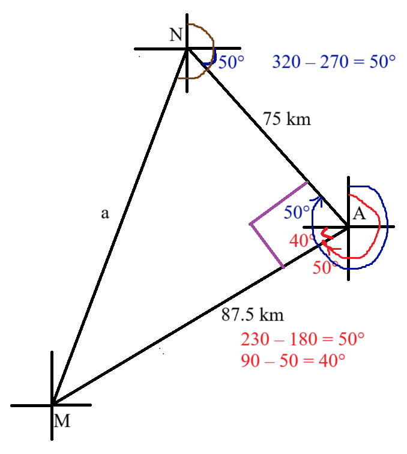
$
a = |MN| \\[3ex]
\underline{\text{Right Triangle MNA}} \\[3ex]
(a.) \\[3ex]
a^2 = 75^2 + 87.5^2...\text{Pythagorean Theorem} \\[3ex]
a = \sqrt{75^2 + 87.5^2} \\[3ex]
a = 115.2443057 \\[3ex]
|MN| = a \approx 115.2\;km ...\text{to one decimal place} \\[5ex]
\tan \angle MNA = \dfrac{87.5}{75} ...\text{SOHCAHTOA} \\[5ex]
\angle MNA = \tan^{-1}\left(\dfrac{87.5}{75}\right) \\[5ex]
\angle MNA = 49.39870535^\circ \\[3ex]
(b.) \\[3ex]
\text{Bearing of M from N} \\[3ex]
= 90 + 50 + \angle MNA \\[3ex]
= 140 + 49.39870535 \\[3ex]
= 189.3987054 \\[3ex]
\approx 189.4^\circ ...\text{to one decimal place}
$
(22.) In $\triangle PQR$, $\angle PQR = 90^\circ$.
It's area is 216cm² and $|\overline{PQ}| : |\overline{QR}|$ is 3 : 4.
Find $|\overline{PR}|$
$
\underline{\text{Right Triangle PQR}} \\[3ex]
|\overline{PQ}| : |\overline{QR}| = 3 : 4 \\[3ex]
\text{Let the side length} = d \\[3ex]
\text{sum of ratios} = 3 + 4 = 7 \\[3ex]
|\overline{PQ}| = \dfrac{3d}{7} \\[5ex]
|\overline{QR}| = \dfrac{4d}{7} \\[5ex]
$
Let us represent this information on a diagram
(23.) Two cyclists X and Y leave town Q at the same time.
Cyclist X travels at the rate of 5 km/hr on a bearing of 049° and Cyclist Y travels at the
rate of 9 km/hr on a bearing of 319°
(a.) Illustrate the information on a diagram.
(b.) After travelling for two hours, calculate, correct to the nearest whole number, the:
(i.) distance between Cyclists X and Y
(ii.) bearing of Cyclist X from Y.
(c.) Find the average speed at which Cyclist X will get to Cyclist Y in 4 hours.
Let the distance between Cyclists X and Y = q
θ, α = angles
(24.) Given that $m = \tan 30^\circ$ and $n = \tan 45^\circ$, simplify, without using a calculator,
$\dfrac{m - n}{mn}$, leaving the answer in the form $p + \sqrt{q}$
(25.) An aeroplane flies 500 km from town P on a bearing of 053° to town Q.
It then flies 700 km to town R on a bearing of 165°
(a.) Illustrate the information with a diagram.
(b.) Calculate, correct to three significant figures, the distance between P and R.
(26.) A boy stands at a point M on the same horizontal level as the foot, T, of a vertical
building.
He observes an object on the top, P of the building at an angle of elevation of 66°.
He moves directly backwards to a new point C and observes the same object at an angle of elevation of
53°.
If $|\overline{MT}| = 50\;m$;
(a.) Illustrate the information in a diagram;
(b.) Calculate, correct to one decimal place:
(i.) the height of the building
(ii.) $|\overline{MC}|$
Let:
$|\overline{PT}| = h$
$|\overline{MC}| = k$
(a.) The diagram is:
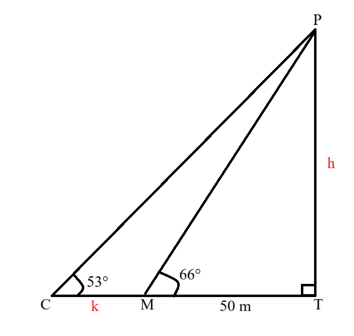
$
(b.)(i.) \\[3ex]
\underline{\triangle PMT} \\[3ex]
\tan 66^\circ = \dfrac{h}{50} ...\text{SOHCAHTOA} \\[5ex]
h = 50\tan 66 ...eqn.(1) \\[3ex]
h = 112.3018387 \\[3ex]
h \approx 112.3\;m \\[5ex]
\underline{\triangle PCT} \\[3ex]
\tan 53^\circ = \dfrac{h}{k + 50} ...\text{SOHCAHTOA} \\[5ex]
h = (k + 50)\tan 53 ...eqn.(2) \\[3ex]
h = h \implies eqn.(2) = eqn.(1) \\[3ex]
(ii.) \\[3ex]
(k + 50)\tan 53 = 50\tan 66 \\[3ex]
k + 50 = \dfrac{50\tan 66}{\tan 53} \\[5ex]
k = \dfrac{50\tan 66}{\tan 53} - 50 \\[5ex]
k = 34.62550538 \\[3ex]
k \approx 34.6\;m
$
(27.) An aeroplane flies 100 km from point A to point B on a bearing of 330°.
It then flies from point B to point C 300 km due west.
(a.) Illustrate this on a diagram.
(b.) How far west, correct to the nearest km, is the aeroplane from the starting point?
(28.) A tower and a building are on the same horizontal ground.
An engineer on the top of the tower, 110 m high observes that the angle of elevation of the top of the
building and the angle of depression of the foot of the building are 38° and 22° respectively.
Calculate, correct to one decimal place, the:
(a.) distance between the tower and the building.
(b.) height of the building.
(29.) A chord subtends an angle of 72° at the centre of the circle of radius 24.5 m.
Calculate the perimeter of the minor segment.
$\left[\text{Take } \pi = \dfrac{22}{7}\right]$
(30.) (a.) A town J is 20km from a lorry station, K on a bearing of 065°.
Another town, T is 8km from K on a bearing of 155°.
Calculate:
(i.) to the nearest kilometer, the distance of T from J;
(ii.) to the nearest degree, the bearing of T from J
(b.) Given that $\sin\theta = \dfrac{5}{6 + x}$ and $\tan\theta = \dfrac{5}{12}$, 0° < x <
90°, find the value of x.
$
|JT| = k \\[3ex]
\alpha, \beta = \angle s \\[3ex]
$
Let us represent the information on a diagram.
In the diagram, $|\overline{PR}| = 20$ cm, $|\overline{PS}| = 24.12$ cm and Q is a point on
$\overline{PR}$.
If $\angle SPQ = 34^\circ$ and $\angle PSQ = 20^\circ$, calculate, correct to one decimal place:
(a.) $|\overline{SR}|$
(b.) $|\overline{PQ}|$
(c.) Area of $\triangle PQS$
In the diagram, PQR is a triangle.
If $x + y = 210^\circ$, find the value of n.
$
y + \angle QPR = 180^\circ ...\text{sum of angles on a straight line} \\[3ex]
\angle QPR = 180 - y \\[3ex]
x = (180 - y) + n ...\text{exterior angle of a triangle is the sum of the interior opposite angles} \\[3ex]
x = 180 - y + n \\[3ex]
n = x - 180 + y \\[3ex]
n = 210 - 180 \\[3ex]
n = 30^\circ
$
(33.) A bird perches on the top of a slanted tree of length 12.8 m.
If the bird is 10 m vertically above the ground,
(a.) illustrate the information on a diagram
(b.) find, correct to the nearest degree, the angle of depression of the foot of the tree.
(35.) The hypotenuse of a right-angled triangle is 39 cm long and the perimeter is 90 cm.
Find the length of the other two sides.
$
\underline{\text{Right-angled Triangle}} \\[3ex]
hypotenuse = hyp = 39\;cm \\[3ex]
\text{one leg} = x \\[3ex]
\text{other leg} = y \\[5ex]
\text{Perimeter} = p + k + hyp \\[3ex]
90 = x + y + 39 \\[3ex]
x + y = 90 - 39 \\[3ex]
x + y = 51 ...eqn.(1) \\[5ex]
x^2 + y^2 = 39^2 ...\text{Pythagorean Theorem} \\[3ex]
x^2 + y^2 = 1521 ...eqn.(2) \\[5ex]
\text{From eqn.(1)} \\[3ex]
x = 51 - y ...eqn.(3) \\[3ex]
\text{Substitute for x in eqn.(2)} \\[3ex]
(51 - y)^2 + y^2 = 1521 \\[3ex]
(51 - y)(51 - y) + y^2 = 1521 \\[3ex]
2601 - 51y - 51y + y^2 + y^2 = 1521 \\[3ex]
2y^2 - 102y + 1080 = 0 \\[3ex]
y^2 - 51y + 540 = 0 \\[3ex]
(y - 36)(y - 15) = 0 \\[3ex]
y - 36 = 0 \hspace{2em}OR\hspace{2em} y - 15 = 0 \\[3ex]
y = 36 \hspace{2em}OR\hspace{2em} y = 15 \\[3ex]
\text{Substitute for y in eqn.(3)} \\[3ex]
x = 51 - 36 \hspace{2em}OR\hspace{2em} x = 51 - 15 \\[3ex]
x = 15 \hspace{2em}OR\hspace{2em} x = 36 \\[3ex]
(leg, leg) = (x, y) = (15, 36) \hspace{2em}OR\hspace{2em} (36, 15)
$
(36.) The ratio of the length of an arc of a circle to the circumference of the circle is 3 : 7.
If the diameter of the circle is 14 cm, calculate, correct to three significant figures, the:
(i.) perimeter of the minor sector
(ii.) area of the minor sector $\left[\text{Take } \pi = \dfrac{22}{7}\right]$
L = length of minor arc r = radius of the circle d = diameter of the circle C = circumference of the circle A = arae of the minor sector P = perimeter of the minor sector
θ = central angle
$
d = 14\;cm \\[3ex]
2r = d \\[3ex]
r = \dfrac{14}{2} = 7\;cm \\[5ex]
C = 2\pi r \\[3ex]
L = \dfrac{2\pi r\theta}{360} \\[5ex]
A = \dfrac{\pi r^2\theta}{360} \\[5ex]
P = L + 2r \\[5ex]
L : C = 3 : 7 \\[3ex]
L \div C = \dfrac{3}{7} \\[5ex]
\dfrac{2\pi r\theta}{360} \div 2\pi r = \dfrac{3}{7} \\[5ex]
\dfrac{2\pi r\theta}{360} * \dfrac{1}{2\pi r} = \dfrac{3}{7} \\[5ex]
\theta = \dfrac{3(360)}{7} \\[5ex]
\theta = \dfrac{1080}{7} \\[5ex]
L = 2 * \pi * r * \theta * \dfrac{1}{360} \\[5ex]
= 2 * \dfrac{22}{7} * 7 * \dfrac{1080}{7} * \dfrac{1}{360} \\[5ex]
= \dfrac{132}{7}\;cm \\[5ex]
(i.) \\[3ex]
P = L + 2r \\[3ex]
= \dfrac{132}{7} + 2(7) \\[5ex]
= 18.85714286 + 14 \\[3ex]
= 32.85714286 \\[3ex]
\approx 32.9\;cm ...\text{to three significant figures} \\[5ex]
(ii.) \\[3ex]
A = \pi * r^2 * \theta * \dfrac{1}{360} \\[5ex]
= \dfrac{22}{7} * 7 * 7 * \dfrac{1080}{7} * \dfrac{1}{360} \\[5ex]
= 66 \\[3ex]
= 66.0\;cm^2 ...\text{to three significant figures}
$
(37.)
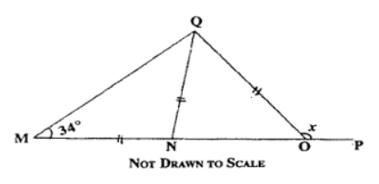
In the diagram, QMN = 34°, $|\overline{MN}| = |\overline{NQ}| = |\overline{QO}|$ and $\angle QOP$ =
x.
Find the value of x.
$
\angle NQM = \angle QMN = 34^\circ ...\text{base angles of isosceles triangle} \\[5ex]
\angle QNO = \angle QMN + \angle NQM
...\text{exterior angle of a triangle is the sum of the interior opposite angles} \\[3ex]
= 34 + 34 \\[3ex]
= 68^\circ \\[5ex]
\angle QON = \angle QNO = 68^\circ ...\text{base angles of isosceles triangle} \\[5ex]
\angle QOP + \angle QON = 180^\circ ...\text{sum of angles on a straight line} \\[3ex]
x + 68 = 180 \\[3ex]
x = 180 - 68 \\[3ex]
x = 112^\circ
$
(38.) The angle of depression of a boat from the midpoint of a vertical cliff is 35°
If the boat is 120 m away from the foot of the cliff, calculate, correct to one decimal place, the
height of the cliff.
Let us represent the information diagrammatically
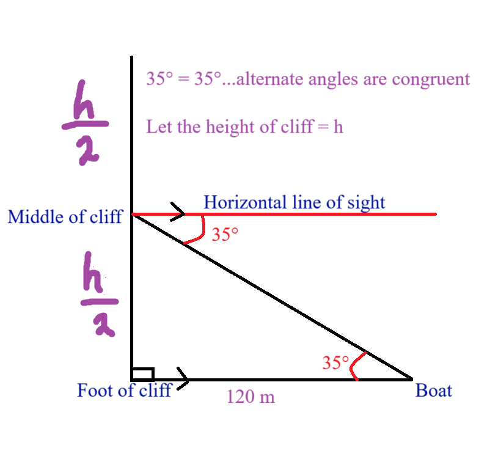
$
\tan 35^\circ = \dfrac{\dfrac{h}{2}}{120} ...\text{SOHCAHTOA} \\[7ex]
\dfrac{h}{2} = 120\tan 35^\circ \\[5ex]
h = 2(120)\tan 35^\circ \\[3ex]
h = 168.0498092 \\[3ex]
h \approx 168.0\;m...\text{to one decimal place}
$
(39.) Given that $\tan x = \sqrt{3}$, 0° ≤ x ≤ 90°, evaluate
$\dfrac{(\cos x)^2 - \sin x}{(\sin x)^2 + \cos x}$
(40.) In an isosceles triangle ABC, $|\overline{AB}| = |\overline{AC}|$ = 6 cm and $\angle BAC =
130^\circ$.
Find, correct to two significant figures, the:
(i.) $|\overline{BC}|$;
(ii.) area of the triangle ABC
(42.) A ladder 10 m long, leans against a vertical wall at an angle of 70° to the ground.
If the ladder slips down the wall 4 m, find, correct to two significant figures:
(a.) the new angle which the ladder makes with the ground;
(b.) the distance the ladder slipped back on the ground from its original position.
In the diagram, $\angle CAD = 35^\circ$, $\angle ACB = 120^\circ$, $|AC| = 12.7\;cm$ and CD is
perpendicular to AB.
Calculate, correct to three significant figures, $|AB|$